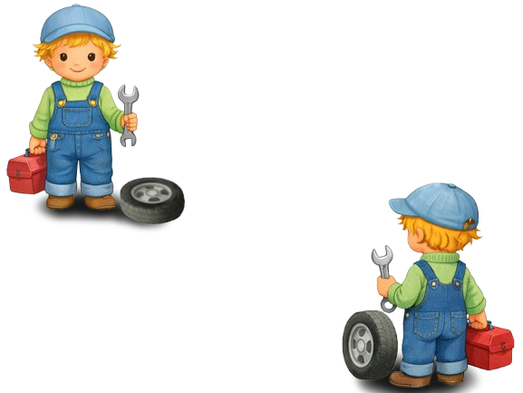

Mécanique
Conseils et astuces pour comprendre, entretenir et réparer des systèmes mécaniques : vélo, auto, moto, outils et mécanismes simples.
➕ Proposer une astuce mécanique
Astuces mécaniques
Conseils et astuces pour comprendre, entretenir et réparer des systèmes mécaniques : vélo, auto, moto, outils et mécanismes simples.